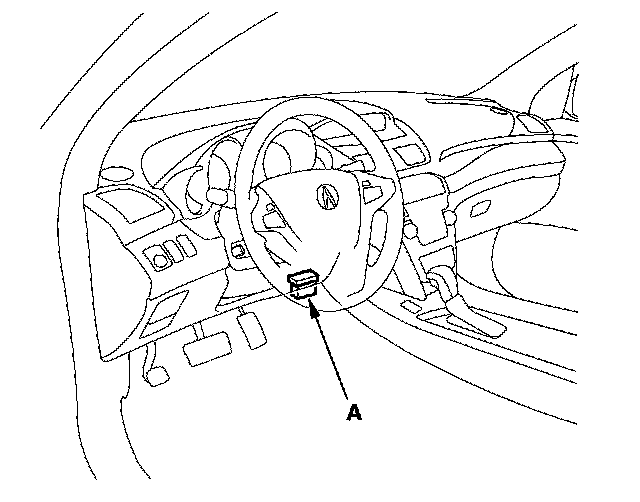

Accelerator Pedal Position Sensor: Testing and Inspection
APP Sensor Signal InspectionNOTE:
- This procedure checks the APP sensor in its fully closed position. In any other position, the APP sensor stores DTCs which are covered in other troubleshooting procedures.
- Check for Temporary DTCs or DTCs with the HDS before doing this procedure. If any DTCs are indicated, troubleshoot them first, then do this procedure.
- Press the accelerator pedal several times to check its operation. If it does not operate smoothly, check the pedal. If you find a problem, replace the accelerator pedal module

1. Connect the HDS to the data link connector (DLC) (A) located under the driver's side of the dashboard.
2. Turn the ignition switch ON (II).
3. Make sure the HDS communicates with the PCM and other vehicle systems. If it does not, go to the DLC circuit troubleshooting. Testing and Inspection
4. Make sure the accelerator pedal is not pressed, then check the APP SENSOR in the DATA LIST with the HDS.
- If it is 0 %, the APP sensor is OK.
- If it is not 0 %, update the PCM if it does not have the latest software, or substitute a known-good PCM, then go to step 5.
5. Make sure the accelerator pedal is not pressed, then check the APP SENSOR in the DATA LIST with the HDS.
- If it is 0 %, the APP sensor is OK.
- If it is not 0 %, replace the accelerator pedal module, then go to step 1.